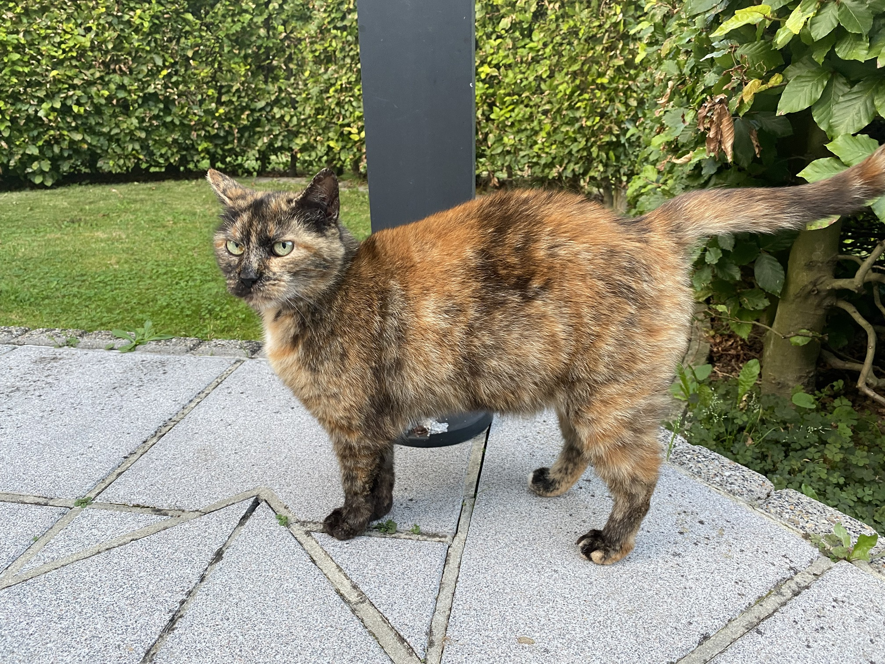
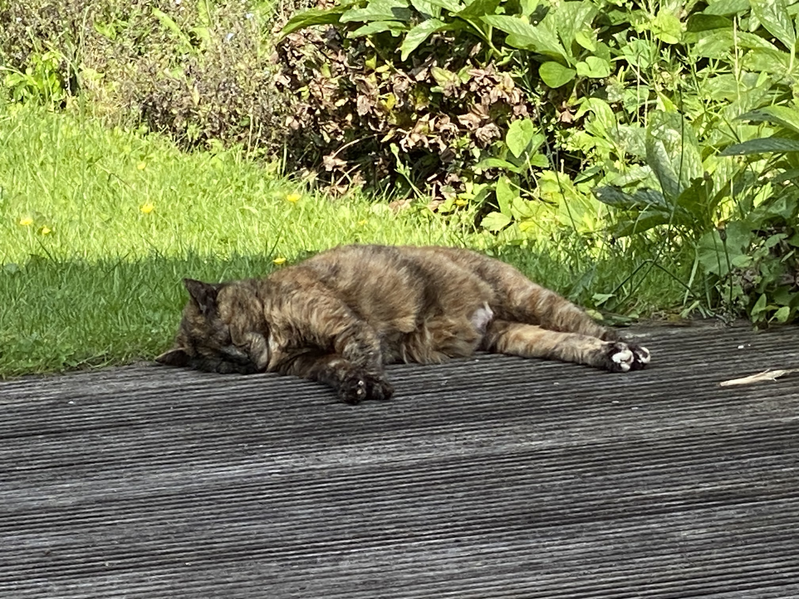
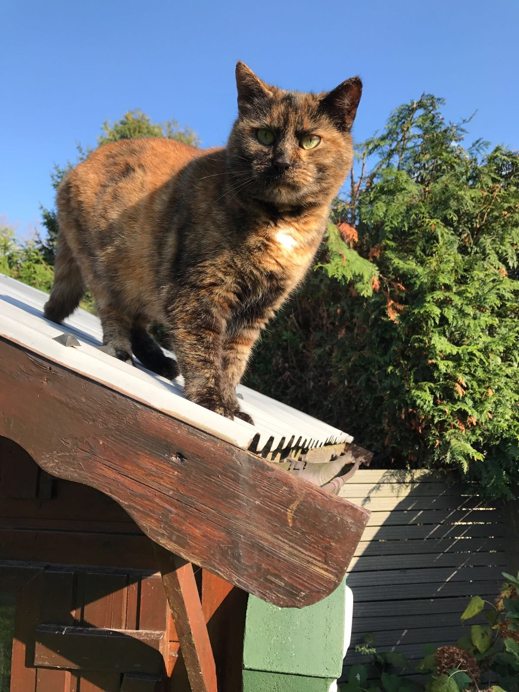

Taby loves the garden and the surrounding meadows. She'Son a discovery tour every day and likely also every night. When we are inthe GArden, she comes to say 'Hello', and she would also pay our neighbors a visit. Anything can be played with, you would not believe it. When it geht hot in summer, you will find her resting on the patio in th shade.


